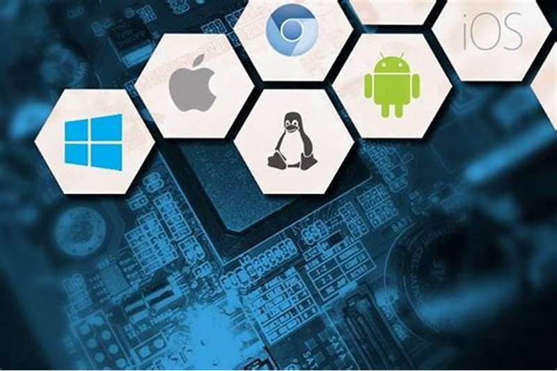
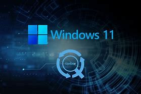
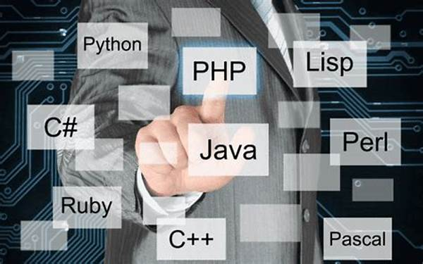

Um sistema operacional (SO) é um software fundamental que gerencia o hardware e os recursos de um computador, além de fornecer serviços essenciais para que outros programas possam funcionar. Ele atua como uma ponte entre o usuário e o hardware do computador, facilitando a execução de tarefas e garantindo que os recursos sejam utilizados de forma eficiente. Funções principais de um sistema operacional: Gerenciamento de Processos: Controla os programas em execução, aloca tempo de processamento da CPU e garante que eles sejam executados de forma ordenada. Gerenciamento de Memória: Organiza a memória RAM, garantindo que os aplicativos em execução tenham o espaço necessário para funcionar. Gerenciamento de Armazenamento: Controla como os dados são armazenados e acessados no disco rígido ou em outros dispositivos de armazenamento. Gerenciamento de Dispositivos: Coordena a comunicação entre o computador e seus periféricos, como teclado, mouse, impressoras e outros. Interface com o Usuário: Oferece uma interface gráfica (GUI) ou linha de comando (CLI) para que o usuário interaja com o sistema. Exemplos de sistemas operacionais: Windows (Microsoft) Linux (ex.: Ubuntu, Fedora, Debian) macOS (Apple) Android e iOS (para dispositivos móveis) Os sistemas operacionais são indispensáveis para o funcionamento de qualquer dispositivo, seja ele um computador, smartphone ou até mesmo um eletrodoméstico moderno. 
Esses sistemas são aqueles que têm distribuição gratuita, ou seja, você não precisa pagar para utilizá-lo na sua máquina. O mais famoso dentre esses sistemas é com certeza o Linux. Basta que o usuário instale esse sistema livre na máquina e assim poderá usá-la sempre problemas. Muitos acreditam que os computadores já vêm da loja com o Windows, mas na verdade quando você compra a sua máquina pode escolher se compra ou não o sistema operacional junto. Dessa forma você paga pelo sistema operacional também na hora da compra. Com o sistema livre você não terá esse gasto, mas preciso ter bem claro que ele não será exatamente como um sistema pago. Além disso, é um pouco complicado conseguir compatibilidade entre os programas de sistemas livres e Windows, por exemplo. Essa falta de compatibilidade é proposital em grande parte dos casos para evitar que os usuários migrem para os sistemas livres.

Linux, FreeBSD, OpenSolaris.
Sistemas proprietários são aqueles cujos direitos de uso, modificação e distribuição são controlados por uma única entidade ou organização. O acesso ao código-fonte e à tecnologia por trás desses sistemas é restrito, ou seja, a empresa responsável pelo sistema define as condições de uso e não permite alterações ou redistribuições sem sua permissão.
Microsoft Windows, macOS, PlayStation.
O software de sistema é um conjunto de informações processadas pelo sistema interno de um dispositivo que permite a interação entre usuário e o hardware. Ele é responsável por gerenciar a eficiência de desempenho do aparelho e é composto por um conjunto de programas ou aplicativos nativos, que têm dois propósitos: oferecer uma experiência de uso para que seja possível controlar e interagir com o sistema e conectar os aplicativos aos recursos de hardware que o dispositivo tem.O software básico costuma ser muito simples, inacessível à maioria dos usuários e gerencia o potencial físico do computador , de acordo com as instruções do sistema operacional , com o qual não deve ser confundido. Diferentes sistemas operacionais podem controlar o mesmo software básico , por exemplo, uma vez que se trata da apresentação comercial de um programa para gerenciar o software do sistema de uma forma ou de outra. No entanto, em muitos casos, ambos os termos são usados como sinônimos . Entre as principais funções do software do sistema estão o controle da transferência de recursos, a administração da memória RAM , o acesso a periféricos ou ao disco rígido, enfim tarefas básicas e fundamentais sem as quais nenhum sistema poderia funcionar adequadamente.
Sistemas Operacionais, Sistemas de Gerenciamento de Banco de Dados (SGBDs), Sistemas de Gerenciamento de Redes.
Softwares aplicativos (ou simplesmente aplicativos) são programas desenvolvidos para executar tarefas específicas para o usuário. Eles são criados para resolver problemas ou facilitar atividades do dia a dia, como escrever um texto, editar uma foto, gerenciar finanças, ou até mesmo jogar um jogo. Em resumo, os aplicativos são aqueles programas que interagem diretamente com o usuário, ao contrário do software de sistema, que gerencia e controla o hardware do computador ou dispositivo. Esses aplicativos não são responsáveis pelo funcionamento interno do dispositivo (isso é o trabalho do sistema operacional), mas sim por oferecer funcionalidades que atendem às necessidades dos usuários.
Jogos, Aplicativos de mensagens; Editor de imagens.
Softwares de programação são ferramentas usadas por desenvolvedores para escrever, testar e depurar código de programas de computador. Eles oferecem ambientes onde o código pode ser editado, compilado e executado, além de ajudar no processo de desenvolvimento com funcionalidades como sugestões de código, autocompletar, e análise de erros.Esses softwares ajudam os programadores a escrever código de maneira mais eficiente e a garantir que o programa funcione corretamente ao ser executado. Resumindo, softwares de programação são as ferramentas essenciais para criar, testar e otimizar códigos e aplicações. 
Editores de Texto, IDEs (Ambientes de Desenvolvimento Integrados), Ambientes de Desenvolvimento Web.